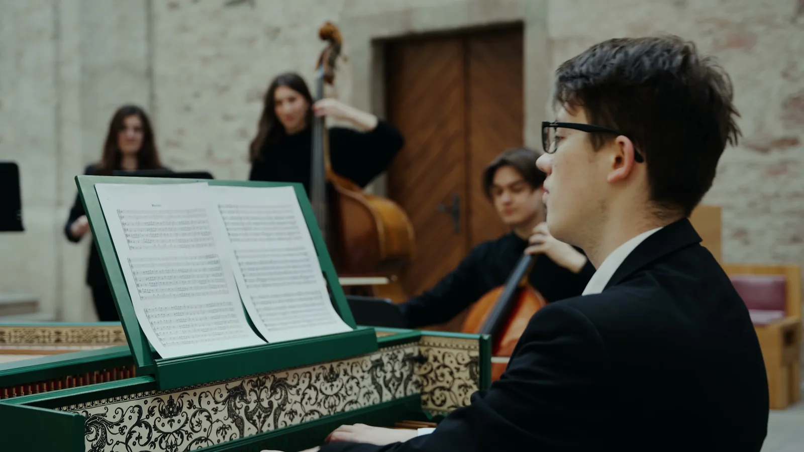
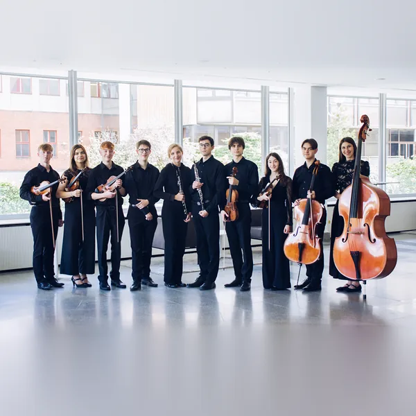
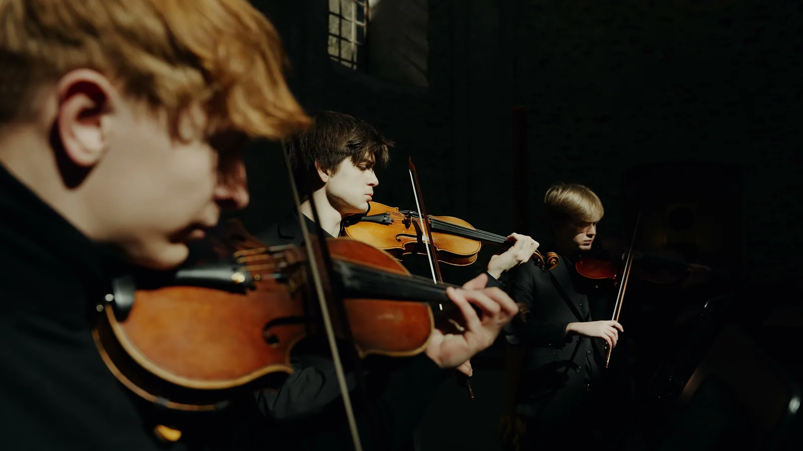

Nadcházející koncerty
Žádný koncert teď v programu nemáme.
Nové termíny zveřejníme tady a na Facebooku a Instagramu. Mezitím si můžete prohlédnout proběhlé koncerty, nebo nás pozvat na svou akci.
O nás
Capella Nostra vznikla v roce 2024 na Konzervatoři Pardubice ze zájmu samotných studentů. Začínala jako komorní uskupení pěti hráčů, dnes má jedenáct hráčů a uměleckého garanta. Hraje hudbu 17. a 18. století historicky poučeně: barokní triové sonáty, J. C. F. Fischera nebo Antonia Vivaldiho.
Více o souboru
Členové souboru
Převážně studenti a absolventi Konzervatoře Pardubice: housle a viola, violoncello, kontrabas, dva hoboje, trubka a cembalo. Soubor vede cembalista Adam Suk, uměleckým garantem je MgA. Michal Hanuš.


Galerie
Pro pořadatele
Hrajeme v kostelech i na festivalech. Napište, kdy a kde koncert chystáte. Ozveme se a program domluvíme spolu.